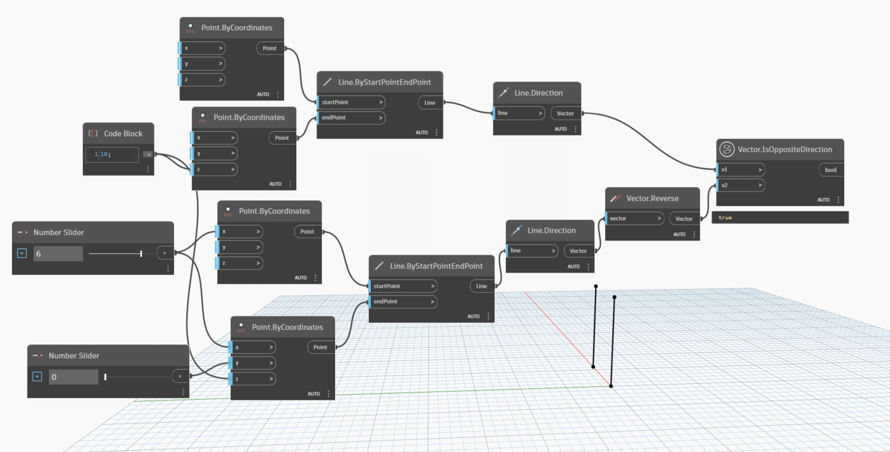

Class Vector
- Namespace
- OpenMEPSandbox.Geometry
- Assembly
- OpenMEPSandbox.dll
public class Vector- Inheritance
-
Vector
- Inherited Members
Methods
CompareTo(Vector, Vector, double)
Compares this a vector with another vector. 0: if this is identical to other 1: if this is greater than other -1: if this is less than other
public static double CompareTo(Vector v1, Vector v2, double tolerance = 0.001)Parameters
v1Vectorthe first vector
v2Vectorthe second vector
tolerancedoublethe tolerance compare two vector
Returns
- double
value compare between two vector
Display(Vector, Point, double)
Shows a scalable line representing a Vector from a chosen starting point
[MultiReturn(new string[] { "Display", "X", "Y", "Z", "Length" })]
public static Dictionary<string, object?> Display(Vector vector, Point startPoint, double scale = 1000)Parameters
vectorVectorAutodesk.DesignScript.Geometry.Vector
startPointPointAutodesk.DesignScript.Geometry.Point
scaledoublevalue scale start from 1
Returns
- Dictionary<string, object>
GeometryColor
Examples
IsOppositeDirection(Vector, Vector)
Check two Vector is opposite direction or not
[NodeCategory("Query")]
public static bool IsOppositeDirection(Vector v1, Vector v2)Parameters
v1Vectorthe first vector
v2Vectorthe second vector
Returns
- bool
true if two vector is opposite
Examples

IsPerpendicular(Vector, Vector)
Evaluate whether two Vector is perpendicular or not
public static bool IsPerpendicular(Vector v1, Vector v2)Parameters
v1Vectorfirst vector
v2Vectorsecond vector
Returns
- bool
true if two vector is perpendicular
Examples
IsSameDirection(Vector, Vector)
Check whether two vector is same direction or not
[NodeCategory("Query")]
public static bool IsSameDirection(Vector v1, Vector v2)Parameters
v1Vectorthe first vector
v2Vectorthe second vector
Returns
- bool
true if two vector is same direction
Examples